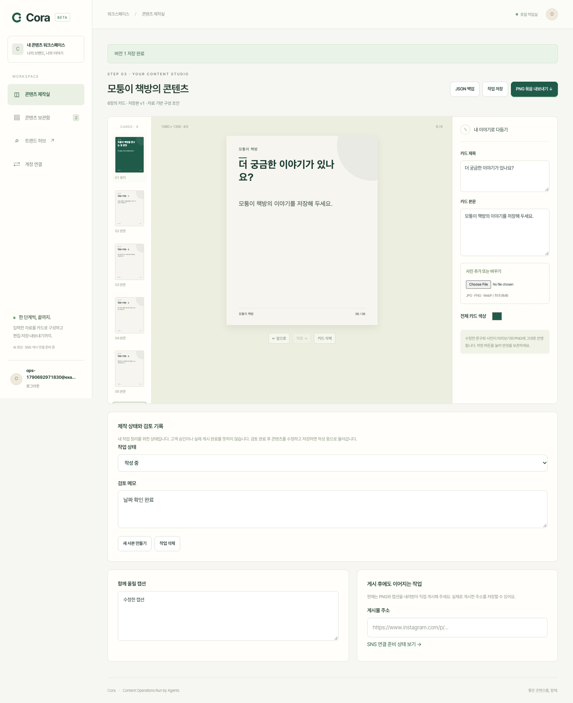

FOUNDER + YUKYUNG / EXECUTION GUIDE만드는 것부터,
반복해서 쓰는 제품까지.
브랜드 자료를 콘텐츠로 완성하는 작업에서 시작해,
검토·게시·성과를 다음 제작에 연결합니다.
대행사 우선 · 개인 운영자 비교12주 개발학생 54시간 계획90%+ 직접 구현 목표
2026-09-29 · 성공과 성장 효과는 검증 전입니다. 현재 실행 범위와 미래 계획을 구분합니다.
한눈에 보는 제품의 확장 순서
현재 실행본제작과 작업 보관카드 편집·저장·PNG
브랜드 재사용·검토 메모·복원
1~4주실제 자료와 생성 연결고객 업무 관찰
카드뉴스·소재·비용·품질
5~8주협업과 게시 연결승인·권한·원격 시험
SNS 시험·실패 복구
9~12주반복 가치와 출시 판단근거 기반 제안·유료 시험
원가·재사용·독립 검토
API 권한과 소스 접근에 따라 분기합니다. 영상·ML 전체를 12주 필수 범위로 약속하지 않습니다.
유경이 실행·검수 안내현재 검증 결과진행표 원본
이번 작업의 완료표
| 작업 | 상태 | 증거 |
|---|
| 기존 자료·코드·GitHub 점검 | 완료 | 기존 마스터플랜·현재 코드 대조, GitHub main 카드뉴스 README만 존재 확인 |
| 타겟·STP·가치 제안·BM | 완료 | 01_사업과제품_실행계획.md 2~4절: STP·가치·가격·원가 |
| 벤치마크·MVP 범위 | 완료 | 같은 문서 5~6절, 공식 출처 재확인 및 공개화면 4개 캡처 |
| 12주 개발·검증·출시 계획 | 완료 | 같은 문서 7~11절: 12주·54시간·검증·출시·Rita |
| 제품 개선과 검증 | 완료 | 증거/operations-proof.json 및 proof.json, 327 통과·1 제외 |
| 유경이 인계 패키지 | 완료 | 먼저읽기·역할 가이드·기능 16개 표·실험표·HTML 검색/계산/모바일 검사 |
| 최종 점검·GitHub 저장 | 진행 중 | 최종 문서 감사·Git 커밋/업로드 준비 |
생성 시점의 상태입니다. 최신 기록은 진행표 원본을 확인하세요.
CORA / 00계획의 전제
2026-09-29 · 임보람·조유경 공동 작업용 · 가칭 Content Operations Run by Agents
사업 판단: 좁은 업무에서 비교 검증할 가치가 있다. 지금은 출시 확대보다 실제 사용·채택·반복 결제를 확인할 단계다. 첫 고객은 여러 브랜드의 SNS 콘텐츠를 정기 제작하는 소규모 대행사다. 크리에이터를 배제하지 않되, 별도 고객군으로 같은 업무를 비교한다. 경쟁사 존재는 포기 이유가 아니다. 고객이 이미 쓰는 도구 조합보다 결과·시간·총비용 중 무엇이 나아지는지 실증해야 한다.
이 문서의 가격·고객 수·시간 목표는 의사결정을 위한 시험 가설이다. 관측 결과나 성공 보장이 아니다. 구현 상태는 00_진행체크리스트.md와 04_검증결과.md가 우선한다. 과거 문서의 8주·학생 2명 가정은 적용하지 않는다. 현재 개발 기간은 12주, 조유경의 가용 시간은 주 4~5시간이다. 창업자 시간은 아직 정해지지 않았다.
CORA / 011. 먼저 실제 업무와 경쟁 제품을 함께 본다
Planable은 고객별 작업공간, 콘텐츠 위의 피드백, 승인 권한과 버전 관리를 제공한다. 공개 공유 링크의 열람·댓글과 정식 승인은 구분하며, 승인된 콘텐츠가 수정되면 다시 검토하도록 설정할 수 있다. 이는 대행사의 문제를 ‘더 많은 글 생성’으로만 정의하면 놓치는 업무다. 공식 승인 설명 ↗, 고객별 작업공간 ↗.
Sabrina의 실제 튜토리얼은 대화로 내용·템플릿을 정하고, Blotato가 카드를 생성한 뒤 계정을 골라 즉시 또는 예약 게시하는 과정을 보여준다. n8n은 과정을 연결한다. Cora가 참고할 것은 이 연결 방식과 실패 확인 흐름이다. 공개 튜토리얼의 ‘viral’ 표현을 Cora의 성과 보장으로 가져오지 않는다. Sabrina 원문 ↗.
Cora에는 이미 사용자가 제공한 자료를 카드로 구성하고 편집·저장·내보내는 실행 결과가 있다. 가상 ‘모퉁이 책방’ 자료로 문구·사진을 바꾸고 순서를 바꾼 6장의 PNG를 실제 생성했다. 이는 기술 시험이며 고객 수요 검증은 아니다. 다음 실험은 대행사가 지난주 실제로 납품한 자료와 결과물을 받아 같은 업무를 다시 수행하는 것이다.
| 실제 관찰할 단계 | 지금 대조할 기존 작업 | Cora가 줄일 반복 작업 | 사람이 결정해야 할 것 |
|---|
| 자료 수령 | 메신저·문서에서 사실과 사진 찾기 | 출처와 사용 자료를 한 프로젝트에 정리 | 사용할 권리, 최신 가격·행사 사실 |
| 소재 선택 | 담당자가 고객 목표와 소재를 맞춤 | 후보·근거·제작 범위 구조화 | 브랜드에 맞는 각도, 제외할 소재 |
| 제작 | Canva·미리캔버스·편집 도구 조작 | 초안·규격·캡션·반복 배치 | 표현·사진·디자인의 적합성 |
| 수정·승인 | 파일 전달과 메신저 수정 왕복 | 같은 버전 위의 피드백과 상태 | 사실·브랜드 승인 책임 |
| 게시 | 파일 이동·계정 선택·예약 | 승인본과 계정을 묶은 게시 작업 | 공개 게시 승인 |
| 회고 | 지표 캡처와 보고서 | 지표 정의·결측·비교를 정리 | 어떤 결과가 사업 목표에 의미 있는가 |
현재 Cora가 이 전체 표를 구현한 것은 아니다. 이 업무에서 어느 구간이 실제 비용과 불만의 원인인지 확인한 뒤 개발 비중을 조절한다.
CORA / 022. STP는 직업 이름보다 반복 업무로 나눈다
세분화
| 고객군 | 해야 하는 일·구매 계기 | 사용자와 결제자 | 주요 불편 가설 | 현재 대응 방식 | 초기 우선순위 |
|---|
| 여러 브랜드를 정기 운영하는 소규모 대행사 | 정해진 납기에 여러 브랜드 콘텐츠 납품 | 실무자 사용, 대표·팀장 결제, 고객사 승인 | 반복 입력·수정 왕복·최종본 혼동·보고 | 디자인 도구+AI+메신저+발행 도구 | 1순위 |
| 정기 제작하며 수익원이 있는 개인 운영자 | 전문성·상품·서비스를 지속적으로 알림 | 본인 사용·결제 | 소재 고갈·편집 시간·성과 해석 | ChatGPT+Canva/CapCut+분석 도구 | 비교 표본 |
| 처음 계정을 키우려는 개인 | 주제와 첫 게시물, 실행 습관 만들기 | 본인 | 어디서 시작할지 모름·꾸준히 하기 어려움 | 강의·무료 템플릿·시도 후 중단 | 체험 경로, 유료 핵심은 미확정 |
| 브랜드 내부 마케팅팀 | 여러 담당자와 캠페인 운영 | 실무자 사용, 관리자가 구매 | 권한·검토·브랜드 통제 | 기존 업무 시스템·SaaS | 후순위 |
| 고급 영상 중심 제작사 | 촬영·스토리텔링·정교한 후반작업 | 전문 제작자 | 높은 편집 품질과 협업 | 전문 영상 도구 | 초기 카드 MVP 대상 아님 |
첫 타겟의 모집 조건
가설상 3~10개 브랜드 또는 월 20건 안팎의 정기 제작이 있는 팀을 찾는다. 숫자 자체보다 다음 네 조건을 우선한다: 최근 실제 자료와 수정 과정을 보여줄 수 있음, 2주 안에 다음 납품이 있음, 구매 책임자에게 접근 가능함, 제품 시험에 쓸 자료의 권한을 확보할 수 있음. 처음부터 광고 문구의 법적 검토가 복잡한 업종에 집중하지 않는다. 일반 교육·문화·생활 서비스 콘텐츠를 후보로 삼되 고객 접근성이 더 좋은 업종이 있으면 근거를 기록하고 바꾼다.
포지셔닝
‘브랜드 자료를 받아, 검토할 수 있는 콘텐츠로 만들고, 다음 제작에 수정 경험을 이어주는 작은 팀의 콘텐츠 작업실.’
현재 홍보 문구는 ‘브랜드 자료로 카드 초안을 만들고 직접 다듬어 보세요’까지다. 정식 승인·SNS 게시·계정 진단을 실제 연결한 뒤에만 해당 약속을 추가한다. 개인 운영자에게는 같은 기능을 ‘내 자료로 이번 주 콘텐츠를 완성하는 작업실’로 설명한다. 처음부터 서로 다른 제품 두 개를 만들지는 않는다.
CORA / 033. 가치 제안은 구매할 결과로 검증한다
| 고객의 필요 | 제공할 산출물 | 왜 바꿀 이유가 되는가 | 시험할 지표 | 실패 신호 |
|---|
| 자료를 매번 다시 설명하기 싫음 | 브랜드별 사실·문체·제외 규칙과 프로젝트 | 반복 설명과 같은 오류 감소 | 반복 수정 사유·재작업 시간 | 설정 부담이 절감보다 큼 |
| 무슨 콘텐츠를 만들지 빨리 결정 | 근거가 붙은 소수 후보와 편집 가능한 초안 | ‘추천’과 실제 제작 사이 이동 감소 | 후보 채택·완성까지 시간 | 그럴듯하나 쓰지 않는 추천 |
| 고객 수정에 대응 | 버전별 피드백·최종 승인본 | 최종본 혼동과 전달 왕복 감소 | 수정 회차·승인 대기 원인 | 어차피 메신저로 전부 반복 |
| 게시 후 다음 행동을 알고 싶음 | 실제 지표·불확실성·다음 제작 실험 | 분석을 실행으로 전환 | 추천 실행·다음 주 재사용 | 점수만 보고 끝남 |
| 여러 도구를 이동하기 번거로움 | 제작·검토·게시 작업의 연결 | 파일·계정·문구 복사 오류 감소 | 수동 이동 횟수·오게시·지원 시간 | 더 비싼 중간 단계가 됨 |
낮은 진입장벽은 무료라는 뜻만이 아니다. SNS 연결을 나중으로 미루고, 자기 자료 한 조각으로 결과를 먼저 보게 하며, 편집·내보내기를 막지 않는 것이 중요하다. 현재 앱은 저장을 위해 가입이 먼저 필요하다. 다음 사용성 실험에서는 가입 전 임시 체험 후 저장 시 가입과 비교한다. 이 전환 개선은 아직 구현 완료가 아니다.
‘한국어’, ‘AI’, ‘XGBoost’, ‘자동화’만으로 비싼 가격을 정당화하지 않는다. 잘못된 사실을 덜 만들고 수정이 줄며 다음 주에도 쓰게 만드는 결과가 필요하다. 30배 빠르거나 팔로워 증가 같은 주장은 직접 비교 근거가 생기기 전에는 사용하지 않는다.
CORA / 044. BM은 활성 브랜드와 사용량 중심으로 시작한다
주력은 월 구독에 활성 브랜드 수와 포함 제작량을 묶는 방식이다. 검토자 초대에 비용을 붙여 승인 참여를 방해하지 않는 방향을 시험한다. 고원가 영상·대량 생성은 별도 한도다. 반복되는 사람 지원과 맞춤 제작은 숨기지 않고 별도 상품·원가로 기록한다.
| 상품 가설 | 실제 판매 가능한 범위가 갖춰졌을 때의 내용 | 세전 월 가격 가설 | 검증할 것 |
|---|
| 단일 브랜드 | 카드 10세트, 편집·저장·내보내기 | 59,000원 | 기존 도구 대비 완성 시간·채택·반복 사용 |
| 대행사 | 브랜드 3개, 합계 카드 30세트 | 149,000원 | 브랜드 전환·수정 재사용·지원 원가 |
| 추가 브랜드 | 카드 10세트 추가 | 49,000원 | 원가와 실제 추가 수요 |
| 진단·운영 추가 | 계정 수집·해석·보고·게시 | 미정 | API/공급사 비용·반복 가치부터 측정 |
| 설정·대행 | 사람의 초기 설정·디자인·운영 | 범위별 견적 | SaaS 수익성과 분리 |
카드 한 세트는 초기 가정상 6~8장과 캡션이다. 문구 수동 수정과 재다운로드를 AI 생성처럼 차감하지 않는다. 원가를 발생시키는 재생성만 실행 전에 비용을 알린다. 시스템 실패로 생긴 비용은 내부 원가에 포함하고 고객에게 성공 사용량처럼 청구하지 않는다. 현재 앱에 결제 기능은 없다.
단위경제성 계산
월 기여이익 = 세전 순매출 − 결제비 − 생성·재시도·렌더·저장·전송비 − 반복 지원 노동 − 고객별 외부 라이선스 배분
대행사 149,000원, 30세트를 가정한 계획 계산이다. 수수료 3%, 지원 시급 30,000원은 실제 계약 요율·임금이 아니다. 계산 가능한 가정이며 가격의 적정성을 증명하지 않는다.
| 가정 | 세트당 처리 원가 | 지원 시간/월 | 기타 직접비/월 | 월 기여이익 | 기여율 |
|---|
| 낮은 원가 | 300원 | 15분 | 5,000원 | 123,030원 | 82.6% |
| 중간 원가 | 1,000원 | 45분 | 12,000원 | 80,030원 | 53.7% |
| 높은 원가 | 2,500원 | 120분 | 25,000원 | -15,470원 | -10.4% |
개발·고정 인건비·고객획득비는 이 표 밖이다. 중간 시나리오의 고객 10곳도 월 기여이익 약 80만원이며 회사 순이익이 아니다. ‘몇 명 가입하면 성공’이라고 볼 수 없다. 계정 진단과 게시 공급사 비용을 넣으면 가격을 다시 계산해야 한다. 낮은 가격 경쟁은 지원까지 자동화되어 원가 우위가 확인됐을 때 선택한다.
매번 실제 원가, 재시도율, 사람이 개입한 시간, 무료 시험과 유료 사용을 따로 기록한다. 초기에 유지기간을 가정한 LTV를 부풀리지 않고 관측된 누적 기여이익과 획득비를 비교한다. 첫 소규모 파일럿 예산은 기존 구독을 제외한 추가 실비 30만원을 승인이 필요한 제안 상한으로 두되 오늘 밤 새 결제는 하지 않는다. 학생 보상과 개발자 비용은 별도 결정이다.
CORA / 055. 경쟁에서 이길 부분을 업무 단위로 고른다
아래 순서는 기업 가치나 품질의 객관적 세계 순위가 아니라 Cora가 먼저 학습할 순서다. 기존 32개 조사는 참고 부록으로 유지하고, 핵심 설계는 소수 제품에서 고른다. 유료 내부 화면을 모두 시험한 것은 아니다.
| 순서 | 기준 제품 | 가져올 작동 방식 | Cora의 개선 가설 | 그대로 가져올 수 없는 것 |
|---|
| 1 | Planable | 콘텐츠·수정·승인·버전이 같은 위치에 존재 | 한국어 자료 기반 제작부터 검토까지 이동 감소 | 고객 운영 경험, 권한·정식 승인 검증 |
| 2 | ContentStudio | 고객별 운영·발견·예약·분석 연결, 승인 링크 | 작은 팀이 필요한 일만 보이는 화면 | 광범위한 연동·데이터·제품 안정성 |
| 3 | Mirr | 소재/링크에서 형식 선택과 제작으로 짧게 이동 | 초안의 직접 편집과 수정 이유 재사용 | 내부 프롬프트·모델·성과 데이터 |
| 4 | Sabrina·Blotato | n8n에서 제작 작업과 실제 계정 게시 연결 | 승인본·계정·재시도·상태를 Cora에 기록 | 공급사 API 자격·요금·재판매 권한 |
| 5 | Buffer·Metricool | 콘텐츠 계획, 게시, 지표와 보고 | 보고에서 다음 제작 실험으로 연결 | 플랫폼별 권한·지표의 의미 |
| 6 | Canva·미리캔버스 | 편집 가능한 요소·브랜드 템플릿·내보내기 | 자주 쓰는 카드만 적은 조작으로 완성 | 템플릿·폰트·소재 라이선스 |
| 7 | OpusClip·Descript·Vrew | 긴 영상 재가공, 원고·자막 중심 편집 | 후속 단계에서 소유 영상 한 유형에 집중 | 영상 처리 품질과 비용·음원 권리 |
ContentStudio 공식 설명 ↗, Mirr ↗, Buffer 기능·과금 ↗, Metricool ↗, 미리캔버스 ↗. 마지막 행은 기존 조사에서 가져온 후속 후보이며 이번 작업에서 영상 품질을 재시험하지 않았다.
Planable 공개 링크는 열람·댓글용이고 정식 승인에는 권한 있는 계정이 필요하다. ContentStudio는 암호 없이 접근하는 승인 링크를 소개한다. 따라서 ‘경쟁사는 모두 로그인 없는 승인’처럼 합쳐 서술하지 않는다. Cora의 정식 고객 승인은 기명 권한과 버전 기록을 우선 설계한 뒤 저마찰 접근을 시험한다.
Buffer의 공개 대시보드는 이번 확인에서 MRR $2.2M, ARR $26.8M을 표시했다. 회사 자체 공개 수치이며 측정 기준월이 화면에서 확정되지 않았다. 유료 수요가 존재한다는 근거이지 Cora의 매출 전망이 아니다. 기존 조사에 보관된 FY2025 연말 수치와 시점이 달라 덮어쓰지 않는다. Buffer 공개 지표 ↗.
CORA / 066. MVP와 확장 제품을 분리한다
첫 유료 MVP는 ‘한 브랜드 자료로 카드·캡션을 만들고 수정해 납품하는 작업’을 반복해서 수행하는 도구다. 계정 성장 종합 서비스는 목표 방향이지만, 첫날부터 영상 편집·광고 최적화·전 채널·ML을 모두 판매하지 않는다.
| 기능 묶음 | 입력 | 제공 결과 | MVP 완료 기준 | 현재/계획 |
|---|
| 제작 기반 | 브랜드·목표·자료·사진 | 편집 가능한 카드·캡션 | 내용 수정·서버 저장·재열기·동일 파일 내보내기 | 실행본 존재 |
| 반복 작업 관리 | 브랜드 설정·기존 프로젝트·메모 | 재사용·복사·복원·필터 | 다른 계정 격리, 원본 보존, 저장 상태 일치 | 이번 개선 검증 대상 |
| AI 카드 연결 | 사용자 자료·브랜드 규칙 | 실제 모델/렌더 결과·비용·오류 | 원문 사실 확인, 실패 처리, 비용 상한 | 소스/API 확인 후 |
| 소재 탐색 | 주제·허용 출처·기간 | 출처·시각·선택 이유가 있는 후보 | 중복 제거, 오래된 자료 표시, 제작안 연결 | 기존 Trend와 연결 필요 |
| 정식 협업 | 멤버·역할·수정 요청 | 고객 승인과 버전 원장 | 초대한 검토자만 접근, 수정하면 재승인 | 현재 개인 상태와 구분 |
| SNS 게시 | 승인 버전·연결 계정·시각 | 실제 게시 상태·URL | 중복 방지, 해제, 실패/불명 상태 복구 | n8n+Blotato 우선 시험 |
| 계정 진단 | 권한 있는 지표·콘텐츠·목표 | 결측과 근거가 보이는 다음 행동 | 지표 정의·출처·비교 기간·해석 한계 | 설계/데이터 준비 |
| ML 추천 | 시간·계정 분리된 라벨/성과 | 기준선 대비 검증된 후보 순위 | 독립 평가·학습 누수 방지·실무 효용 | 데이터 충족 후 |
첫 출시에서 제외: 범용 전문 영상 편집기, 무제한 생성, 모든 SNS 동시 연결, 자동 DM/댓글 영업, 효과 미검증의 바이럴 점수, 성장/매출 보장, 고객 자료의 무단 공동 학습. 경쟁 도구와 연결하는 편이 나은 기능은 직접 재개발하지 않는다.
CORA / 077. 12주 로드맵과 일정의 분기
주는 프로젝트 시작일 기준 상대 주차다. 현재 첫 작업본으로 일부 기반을 앞당겼지만 고객 검증 시간까지 완료된 것은 아니다. 아래는 외부 API 승인·소스 접근에 따라 나뉘는 조건부 계획이다. 필수 과제가 밀리면 후순위 기능을 줄이고, 전부를 12주에 강제로 넣지 않는다.
| 주 | 구현과 사업 작업 | 조유경의 4~5시간 배정 | 주말에 남아야 할 증거 |
|---|
| 1 | 현 작업본 실행, 대상 대행사 후보, 최근 업무 관찰 | 1h 전체 그림·1h 실행·2h 시험·0.5h 기록 | 첫 결과 PNG와 문제 5건 이내, 후보 연락은 임보람 |
| 2 | 대행사 1곳·개인 1명의 최근 제작 흐름 비교 | 관찰 1.5h·정리 1h·재현 1.5h·회의 0.5h | 도구·시간·승인자·반복 수정 기록 |
| 3 | 카드뉴스 소스 사본/어댑터 연결, 실제 생성 단일 경로 | 입력 3건 비교 2h·오류 재현 1.5h·정리 1h | 모델/렌더 결과·실패·비용 기록 |
| 4 | 자료·브랜드·소재 후보 연결, 원문 사실 검수 | 3개 브랜드 샘플 2h·가독성 1.5h·정리 1h | 후보 선택 이유와 완성 파일, 시간 기준선 |
| 5 | 반복 작업·피드백·버전 강화, 역할별 검토 설계 | 수정 왕복 시나리오 2h·권한 시험 1.5h·정리 1h | 잘못된 버전 승인 방지·변경 기록 |
| 6 | 제한된 원격 공동 시험, 계정/데이터 분리·복구 | 별도 컴퓨터 재현 2h·백업 복원 1h·기록 1.5h | 독립 검토할 첫 위험 목록, 원격 실행 결과 |
| 7 | n8n+Blotato 게시 연결 준비 및 허가된 계정 시험 | 계정/시간대 시나리오 1.5h·실패 재현 2h·정리 1h | 실제 허가 게시 1건 또는 차단 사유와 대체 경로 |
| 8 | 게시 상태·재시도·해제, 지표 읽기 연결/수동 입력 설계 | 누락/중복 자료 2h·지표 사전 1.5h·정리 1h | 같은 게시물 중복 방지·미확인 상태·지표 정의 |
| 9 | 단순 진단과 다음 제작 제안, 두 번째 주기 사용 | 추천 이유 검토 2h·채택 기록 1.5h·회의 1h | 관찰/문헌/추론 구분, 반복 사용 기록 |
| 10 | 좁은 유료 파일럿, 가격·지원시간·원가 측정 | 사용 관찰 2h·비용 정리 1h·오류 1.5h | 실제 선택/결제 여부·거절 이유·기여이익 |
| 11 | 독립 개발 검토·해결, 운영 설명·삭제·장애 대응 | 수락 시험 2h·인계 재현 1.5h·정리 1h | 필수 결함 해결과 복구 시험 |
| 12 | 재사용/갱신/손익 검토, 제한 출시 또는 수정 결정 | 증거표 2h·가이드 1.5h·회고 1h | 출시 범위·지원 책임자·다음 투자 결정 |
학생 계획은 4.5시간×12주=54시간이다. 고객 일정이 잡히지 않으면 해당 주에는 인터뷰 대신 내부 시뮬레이션을 하되 고객 검증 완료로 세지 않는다. 창업자는 매주 제품 결정·고객 접촉·콘텐츠 판단 시간을 별도로 확보해야 한다. 가능한 시간을 확정한 뒤 주간 범위를 줄이거나 유지한다.
외부 게시가 막히면 7~8주를 삭제하지 않고 어댑터 계약·실패 모의 시험·수동 내보내기 경로를 완성한다. 그 경우 출시 약속에서도 자동 게시를 제외한다. 정식 분석 접근이 막히면 사용자가 제공한 자료를 제한적으로 설명하되 공식 계정 연결로 표시하지 않는다. 영상과 ML은 이 경로의 필수 통과 조건이 아니다.
CORA / 088. 연구와 진단은 제품의 신뢰를 만드는 방향으로 붙인다
문헌은 출발 가설이다. 기존 부록은 공유·정서·구체성·텍스트 측정·고객 필요·이미지 유형·예측 방법의 핵심 문헌 15편을 정리했다. 이 인계 패키지는 전문 재현이나 체계적 문헌고찰 완료를 주장하지 않는다. 접근한 범위와 한계를 부록에 그대로 보존한다.
진단 화면은 네 칸으로 구성한다: 관측 사실 / 비교 기준과 결측 / 가능한 해석 / 다음 콘텐츠 실험. 예를 들어 저장률은 저장 수÷도달 수로 정의하되 둘이 같은 게시물·기간의 지표인지 확인한다. 도달이 0이거나 없으면 비율을 계산하지 않는다. 조회수와 도달을 바꿔 넣지 않는다. 릴스·카드·광고 집행을 무조건 같은 모집단으로 합치지 않는다.
처음부터 전체 계정에 87점을 주는 방식은 피한다. ‘최근 비교 가능한 카드 6건 중 안내형 3건의 저장률이 높았다’처럼 표본과 조건을 보이고 ‘다음 안내형 카드 1건을 시험한다’로 연결한다. 이는 가상 설명 예시다. 6건으로 일반 법칙이나 인과효과를 주장하지 않는다.
| 연구 단계 | 수행 방법 | 산출물 | 넘어갈 조건 |
|---|
| 개념 정의 | 정보성·구체성·질문·브랜드 적합성 정의와 예외 | 코드북, 라벨 예시·불일치 기록 | 사람이 같은 뜻으로 해석 가능한가 |
| 자료 수집 | 동의·출처·콘텐츠 시각·지표 수집 시각·광고 여부 저장 | 게시물별 원장과 결측 이유 | 권리와 지표 비교 가능성 |
| 설명 기준선 | 계정 내부의 같은 형식·기간 비교, 단순 규칙 | 근거 문장과 다음 실험 | 고객이 이해하고 실행하는가 |
| 텍스트/토픽 | 중복·스팸 제거, 대표 댓글 원문 연결, 사람 검토 | 고객 질문 묶음과 소재 후보 | 주제가 안정적이고 행동에 유용한가 |
| 예측 비교 | 단순 기준선/선형 모델과 XGBoost 비교 | 미래 시점·새 계정별 성능·오차 | 복잡성 대비 실무 개선이 있는가 |
| 효과 검증 | 실행 권고의 사전 배정·준수·결과 기록 | 조건별 효과와 불확실성 | 주장 범위 안에서 재현되는가 |
게시 이후 지표를 사전 예측 특성으로 넣지 않는다. 같은 계정의 유사 게시물이 학습·평가에 섞여 과대평가되지 않도록 시간과 계정 단위 분할을 병행한다. SHAP 설명은 모델의 기여 분해이며 인과효과가 아니다. 게시물 200~500건은 초기 라벨링 작업량의 가정이지 모델 출시 보증 표본 수가 아니다. 학습 곡선·독립 계정 수·주요 오류 비용으로 판단한다.
셀링포인트는 ‘XGBoost 탑재’보다 “근거가 보이는 진단과 다음에 실제 만들 수 있는 콘텐츠”다. 분석이 없어도 제작을 시작할 수 있어야 데이터 부족이 진입장벽이 되지 않는다.
CORA / 099. 출시와 고객 획득을 검증 활동으로 설계한다
처음에는 대규모 광고보다 최근 업무를 보여줄 수 있는 대행사 3곳, 정기 개인 2명, 시작 개인 2명을 탐색 목표로 잡는다. 이는 모집 완료 숫자가 아니다. 실제 깊은 파일럿은 대행사 1곳·개인 1명부터 시작해 지원 시간을 통제한다. 학생 지인 사용과 외부 유료 사용은 구분한다.
첫 제안 문구: ‘지난주 납품한 카드뉴스 자료로 Cora와 기존 방식의 제작·수정 시간을 함께 비교해 보겠습니다. 결과물은 직접 수정하고 가져갈 수 있습니다.’ 이 문구는 검증된 광고가 아니다. 인터뷰 동의와 자료 권한을 먼저 확인하고, 실제 연락은 임보람이 수행한다. 오늘 밤 자동 발송하지 않는다.
| 확인할 것 | 관찰/기록 방법 | 다음 행동 |
|---|
| 접근 가능성 | 후보→대화→최근 자료 제공 비율과 거절 이유 | 연결망·업종·제안 문구 조정 |
| 활성화 | 가입 수가 아니라 자기 자료로 편집·내보낸 사람 | 첫 결과 전 막힌 입력/로그인 개선 |
| 채택 | 실제 납품·게시 여부와 미사용 사유 | 사실·디자인·소재 품질 수정 |
| 반복성 | 다음 실제 제작 주기에 스스로 다시 사용 | 사용자가 대신해 달라면 서비스형 수요로 분리 |
| 지불 | 현재 완성된 범위의 유료 시험 선택·거절 | 가격·상품 범위·구매자 확인 |
| 경제성 | 지원·실패까지 포함한 기여이익 | 한도·원가·대상 수정 |
적은 표본의 통계적 유의성을 성공 판정으로 쓰지 않는다. 첫 2회의 실제 제작 주기와 적어도 한 번의 현실적인 유료 선택을 보기 전 광고 확대를 미룬다. 반복 사용과 결제 거절 원인을 고쳐 두 차례 범위를 조정했는데도 고객의 작업에 채택되지 않으면 동일 방향의 개발을 계속 늘리지 않는다. 사용성 문제와 고객 문제 부재를 구분해 중단·대상 전환·기능 축소 중 하나를 결정한다.
CORA / 1010. 우리가 할 일과 개발자가 검토할 일을 구체화한다
| 역할 | 책임 | 넘겨줄 결과 |
|---|
| 임보람 | 고객 접근·구매자 확인·제품 우선순위·연구 정의·비용 승인 | 실제 업무와 목표, 출시 판단 |
| 조유경 | 주 4~5시간의 사용 시험·관찰 정리·작은 AI 보조 코드 개선 | 재현 절차·화면·기대/실제 결과·수정 확인 |
| AI/Codex | 코드·데이터 계약·화면·테스트·문서·수정 구현 | 작동하는 기능과 시험 증거, 구체적 미해결 항목 |
| 개발자 | 독립적으로 권한·비밀·비동기 작업·운영 데이터·복구 점검 및 보완 | 재현 가능한 발견사항과 해결 확인 |
| 디자인/콘텐츠 실무자 | 필요할 때 한국어·가독성·템플릿 검수 | 동일 자료의 블라인드 품질 판단과 수정 기준 |
개발자 참여를 ‘마지막에 도장 받기’로 보지 않는다. 인증·API·게시도 우리가 구현하되 외부 사용자에게 공개하기 전 위험 구간을 독립 검토한다. SQLite 동기화, 레거시 공개 API, 의존성 보안, 비밀번호 찾기, 삭제, 멤버 권한, 토큰 보호, 중복 게시, 장애 복구를 실제 시험 항목으로 넘긴다. 현재 로컬 작업본을 그대로 고객 공개 서비스로 배포하지 않는다.
CORA / 1111. Rita에 재사용할 것은 서비스 기능별 계약이다
브랜드 설정, 소재 발견, 카드 제작, 검토, 게시, 성과 진단을 각각 호출 가능한 작업으로 분리한다. 공통 입력은 사용자/워크스페이스 식별자, 출처, 목표, 작업 버전, 실행 권한이다. 공통 출력은 결과 위치·생성 원가·상태·오류·검증 여부다. Rita가 호출하더라도 고객 계정 권한과 게시 승인을 생략하지 않는다.
첫 분리 후보는 카드 제작·자료 기반 소재 추천·진단 보고다. 게시 작업은 외부 부작용이 있어 idempotency key, 승인 버전, 계정 연결 범위와 결과 대조가 필수다. Cora에서 유용성이 확인된 모듈을 Rita 에이전트로 제공하고, Rita의 미래 유통 가능성을 현재 유료 수요로 계산하지 않는다.
CORA / 1212. 지금의 결정과 남은 불확실성
확정: Cora라는 가칭, 대행사 우선·개인 비교, 12주·학생 주 4~5시간, 사용자/학생/AI의 90% 이상 구현 목표, 기존 프로젝트 보존, Cora 하위 코드·문서 관리, Sabrina 방식 게시 통합을 계속 추진한다.
미확정: 고객이 가장 크게 느끼는 병목, 실제 지불의사, 창업자의 주당 시간, 카드뉴스 소스와 API 계약, Blotato의 다고객 서비스 사용 조건·전체 비용, 공식 Instagram 지표 접근 가능 범위, 데이터 충분성, 개발자 검토 비용. 이 항목들은 허구의 숫자로 채우지 않는다.
내 권고는 개발을 멈추지 않되, 제작·수정·반복 사용의 증거에 따라 범위를 좁히는 것이다. 기능이 늘어나는 속도와 사업이 검증되는 속도는 다르다. 이번 인계는 유경이가 코드를 처음부터 설계하는 출발점이 아니라, 실행 가능한 제품을 실제 자료로 시험하고 다음 개발 결정을 돕는 출발점이다.
CORA / 1313. 한국 시장의 기회는 가설과 접근 가능 규모로 판단한다
한국어 지원 자체는 시장의 빈틈이 아니다. 국내 디자인·영상 도구와 글로벌 AI 도구를 이미 조합할 수 있으므로, ‘한국어 AI가 없어서’라는 가정으로 들어가지 않는다. 우리의 기회 가설은 고객사 자료·수정 의견·브랜드별 표현을 실제 납품 과정에 연결하는 작업이다. 메신저 중심 수정 관행, 담당자의 여러 브랜드 전환, 초안 이후 디자인 손질이 얼마나 큰 부담인지는 한국 대행사 관찰에서 확인해야 한다. 이를 국내 시장 전체의 사실로 단정하지 않는다.
처음 접촉할 대상은 임보람의 접근 가능한 교육·문화·생활 서비스 관련 대행사와 독립 디자이너/운영자다. 접근 가능한 대상이 없다면 연구실의 명성이나 학생 수를 고객 수요로 대신 세지 않는다. 협력 디자이너는 고객 업무를 알려주는 파트너·품질 검토자가 될 수 있고, 본인이 정기 콘텐츠를 납품한다면 사용자 후보이기도 하다. 역할과 보상, 구매를 구분한다.
전체 광고비를 Cora의 시장 규모로 가져오지 않는다. 초기 접근 가능 시장은 조건에 맞는 실제 후보 팀 수 × 확인된 유료 도입 비율 × 세전 연 구독액으로 아래에서부터 계산한다. 아직 도입 비율을 관측하지 않았으므로 이 식의 값은 미확정이다. 후보 100곳에 10% 도입, 월 149,000원을 가정하면 연 반복 매출 1,788만원이다. 이는 민감도 예시이며 시장 추정이나 영업 예측이 아니다. 같은 가정에서 더 큰 사업을 만들려면 도입 가능한 고객 수·재사용·단가·지원 자동화가 동시에 개선되어야 한다.
유입 채널은 세 개를 순서대로 시험한다. 첫째, 접근 가능한 실무자와 실제 업무 비교. 둘째, 동의받은 전후 제작 사례를 보여주는 짧은 데모와 디자이너/대행사 추천. 셋째, 반복 가치가 확인된 뒤 작은 금액의 검색·콘텐츠 광고. 초기부터 광고를 사서 가입 수만 늘리지 않는다. 광고의 주장→체험 첫 결과→유료 기능이 같은 약속을 지키는지 본다.
| 경쟁 상황 | 대응 가설 | 실제 판단 자료 |
|---|
| 기존 도구가 더 저렴함 | 제작·수정까지 포함한 총비용으로 비교 | 도구 요금+직접 작업+지원+전환 비용 |
| Mirr/글로벌 제품에 같은 기능이 추가됨 | 브랜드 수정 기억과 납품 결과의 차이를 시험 | 같은 자료의 품질·수정 시간·고객 선택 |
| 고객이 AI 초안을 신뢰하지 않음 | 출처·확인할 사실·수정 가능 결과 제공 | 사실 오류·검수 시간·채택 여부 |
| 대행사 요구가 지나치게 개별적임 | 공통 업무만 SaaS화하고 맞춤 대행은 분리 | 고객별 설정/지원 원가와 재사용 비율 |
| 개인 운영자가 더 자주 사용하고 결제함 | 같은 제작 기반에서 우선 타겟 전환 | 지원 보정 후 반복 사용·기여이익·획득비 |
타겟 전환은 실패를 감추는 이름 바꾸기가 아니라 더 좋은 실제 고객 증거에 따른 자원 배분이다. 12주 후 선택지는 확대만이 아니다. 대행사 집중, 개인 운영자 집중, 특정 제작 기능만 독립 판매, Rita 내부 모듈로 제한, 추가 투자 중단을 같은 표에서 평가한다.
벤치마크의 공개 화면
공개 소개 페이지를 직접 캡처했습니다. 로그인 뒤 내부 제품을 시험한 화면은 아닙니다. 기능 채택 이유는 위 벤치마크 표를 함께 보세요.
현재 Cora 작업본

가상 책방 자료로 검증한 화면입니다. 실제 고객 성공 사례가 아닙니다.